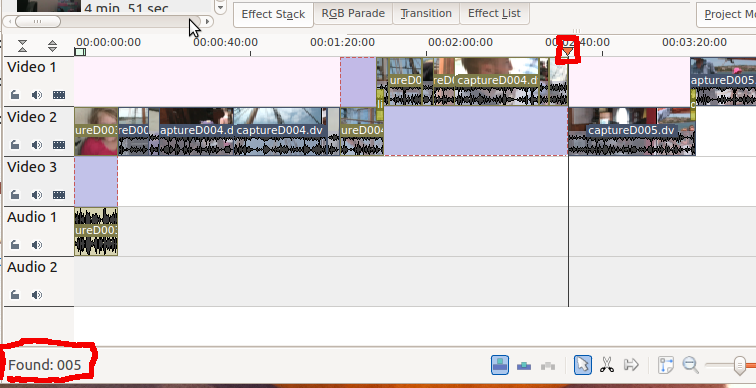
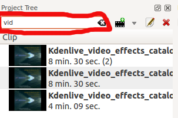

Edit Menu¶
Undo¶
Edit ‣ Undo is used to reverse the last change you made or operation you performed in Kdenlive. If you have made multiple changes to your project, Undo can be used repeatedly to rollback each of the changes in the reverse order they were performed. Undo can also be executed from the icon on the Extra Toolbar (Settings ‣ Toolbars Shown) or by using the keyboard shortcut Ctrl + Z.
To view a navigable list of all the changes which can be undone, see `Undo History`_.
Redo¶
Edit ‣ Redo reverses the previous :Undo operation. The default keyboard shortcut is Ctrl + Shift + Z.
Copy¶
Copies a clip selected in the timeline to the clipboard. The default keyboard shortcut is Ctrl + C. It also copies the effects attached to the clip to the clipboard. Use Paste to paste the clip into a different spot on the timeline. Use Paste Effects to paste just the effects from the copied clip onto a different clip.
Paste¶
Pastes an existing clip in the clipboard into a different spot on the timeline. The default keyboard shortcut is Ctrl + V.
Paste Effects¶
Pastes just the effects from a clip existing in the clipboard onto a different clip.
Find¶
This feature can be used to quickly locate a clip or clips in the timeline. In order to use it, you must be in Project Monitor mode. Clicking Edit ‣ Find (or the default shortcut /) turns on “find text as you type” for five seconds or so. As you type, an incremental search is performed which attempts to match any part of a clip name to the characters you are typing. For instance, in the example shown below, as you type “0”, the timeline cursor would move to the first clip on the timeline because that is the first clip that has a “0” in its name. After you’ve typed “00”, the cursor has not moved because that clip is still a match. However, once you’ve typed “005”, the cursor jumps to the clip shown since it’s the first one that has a match for all three characters. The results of your search are displayed in the left corner of the status bar. If you pause typing for more than five seconds, the “find text as you type” timer will expire. See Find Next for how to find additional occurrences of matching clips.
There is also a find window at the top of the View>Project Tree. Typing text in here causes the list of clips in the project tree to be filtered.
This clip filtering is independent of the Edit ‣ Find menu item.
Find Next¶
This feature is only enabled while an find operation is in progress and only after a successful match has been found. If you have the same clip used more than once in the timeline or you have multiple clips with similar names, you can find the additional occurrences of those clips using this feature. Once you get your first match using Edit ‣ Find, you can click Edit ‣ Find Next (or better yet, the default keyboard shortcut F3, since you’ve only got five seconds to execute it!) and the cursor will move to the next clip(s) that contain a match for the characters you typed.